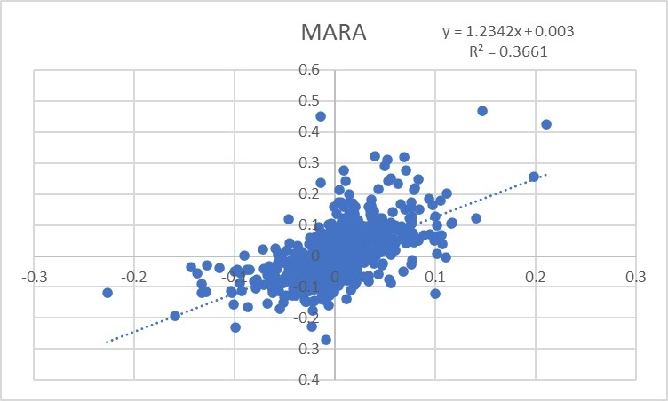
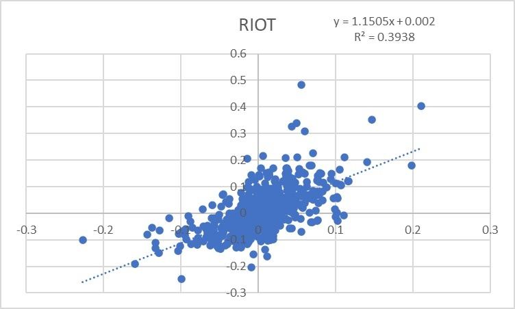
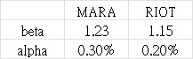
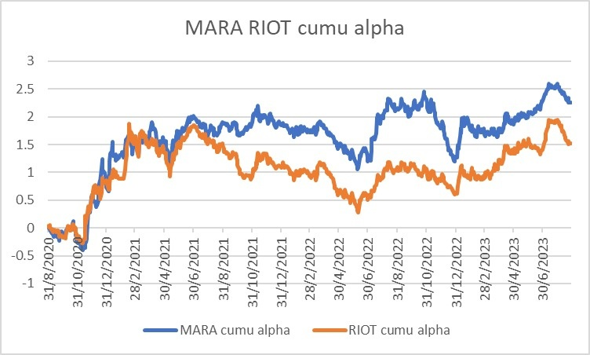
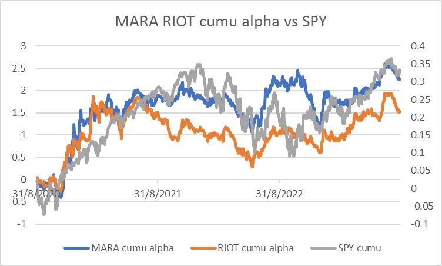
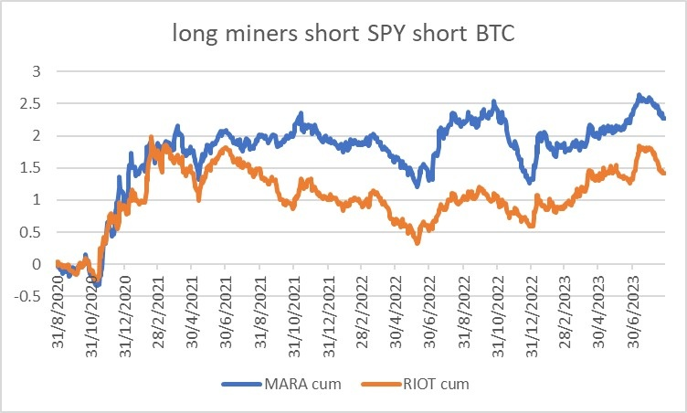

如果有看舊專欄的朋友，都會知道我不建議大家買Crypto miners，即挖掘加密貨幣的相關股份。並不是我對miners有偏見，而是大家必須提防tracking error。例如看好黃金，就買黃金，而不是買金礦股；看好原油就買油期貨，而不是買油股；看好比特幣就買比特幣，而不是買交易平台股或者礦股。因為會出現標的物上升，但proxy不跟升的問題，當中多了一層風險，增加了tracking error。
最佳例子就是GBTC。極多朋友在2021年問我可否買GBTC，我的回答一概是，如果看好BTC，就直接買BTC。兩年後，GBTC折讓達4成！即BTC價格不變，而買了GBTC的人卻輸足足4成！
所以2021年很多朋友問及crypto miners時，我也是說，看好BTC就去買原生的BTC，而不是碰礦股。
2022年幣價跌，miners的兩大代表MARA及RIOT高低位跌了足足95%！！！
證明真的不要碰proxy，當中不確定性太大了。
不過，前晚新聞報道指，Blackrock Q2持倉顯示其掃了不少miners，當中更佔了MARA及RIOT各6%總股份，成為兩者的第二大股東。是否代表我們可以對礦股改觀，可以跟跟Blackrock大戶呢？
的確MARA及RIOT今年上升不少，年初至今升了200-300%，很誇張。不過由$100跌至$5，即使回升300%，也只是回到$20，仍然有80%的drawdown。那若認為比特幣可以創新高，我們可以博miners升4倍重回高位嗎？
數學上很划算，比特幣3萬博6萬，upside downside 1比1；miners博修復80% drawdown，upside downside 4:1。
除了簡單值博率外，我們可以多做點數據分析。我拿來了過去3年的daily數據。
首先是MARA對BTC的beta及alpha。Beta 1.2，alpha 0.3%。然後是RIOT的數據，beta也是1.2，alpha 0.2%。坊間有人說miners beta是BTC 3倍，是錯的。坊間KOL只懂看到250%及70%的升幅差就直接除，錯得很離譜。



數字證明miners是真的跑贏BTC，而不是純靠槓桿。那alpha部分哪裡來？天跌下來嗎？我懷疑是美股/美國量寬帶來的，因此把MARA及RIOT的alpha抽出來看。如下圖：

不錯，近來Q2的升幅很可能是Blackrock掃入導致的。
下一步，加入SPY的表現，以灰線呈現。

會發現，SPY的確解釋到miners alpha的部分！2020-2021年的alpha與SPY很像，即美國「印銀紙」推高了股市，也推高了miners stocks；而2022年則沒有了量寬，因此alpha萎縮。
那如果買入miners後，美股下跌的話，豈不是會虧？
我在LUNA一役教過大家做market neutral了，一起來backtest一下吧。下圖是Long miners short SPY short BTC的結果，目標是想看看miners不受美受不受BTC影響的話，表現會如果，是否真有alpha嗎？

以上就是miners真正的表現，不過不失。
因此，若想看好miner，但不看好美股，大可long miner short index。
值博率問題用數學計算了；
beta alpha問題用統計學解答了；
下一個問題是，基本面支持嗎？
宏觀上為什麼Blackrock要買miners？
這與美國的加密貨幣政策有關。
==============================
重點來了，美國本來是很歡迎加密貨幣的，因為stablecoin都是與美元掛鉤，因此愈多人買crypto，就要買入美元，再轉成stablecoin，間接壯大美元體系。
當年2020年印錢、派錢，本來目的是想刺激經濟。但事後從數據發現，年輕人收到錢後都沒有用來消費，而是拿來買crypto。有些更跑去用Binance等海外交易所，令印出來的錢沒有留在美國內，而是大量流出。
所以今年Q1、Q2美國就來大力打擊幣安，先禁BUSD，再告幣安。有可靠消息來源告訴我，幣安有可能被罰高達50億美元！
打完幣安，轉個頭就吹捧新美國交易所EDX，又指考慮通過現貨ETF。潛台詞就是：我支持加密貨幣，但肥水不流別人田，流入美國相關體系就可以。
因此，在來年打擊完畢非美體系後，美國就會審批通過現貨ETF，屆時BTC就會大升。所以想先拔頭籌的Blackrock現時不能直接持有BTC，就只能先買miners。
一來顯示Blackrock認為BTC現價不錯；
二來因為MARA及RIOT主力挖BTC，再配合美國打擊ADA、SOL、MATIC等等幣種，暗示最清純的BTC仍是最佳選擇。
此外，Blackrock這個操作有點activist的影子。先買入相關股份，再入紙申請現貨ETF，令後者成功的話，自己就能大賺，完全是大戶的典型操作。
最後補充一點，對炒家來說，礦股有一個特別優勢。如果平時想槓桿，大多數人會用合約槓桿，問題在於，插針就會爆倉，回報非常path dependent。不過，用miners看好比特幣就沒有這問題。即使大跌99%也不會爆倉，因為spot的回報並不是path dependent，因此那個1.2 beta屬於免費槓桿。當然，要沽index去hedge us equity beta，而且，有礦工的營運風險。
希望幫到大家。
後話：這篇文昨天寫了一半，但晚上要教班，所以放下了。眨眼間，MARA及RIOT分別升了2成及3成… 無奈。